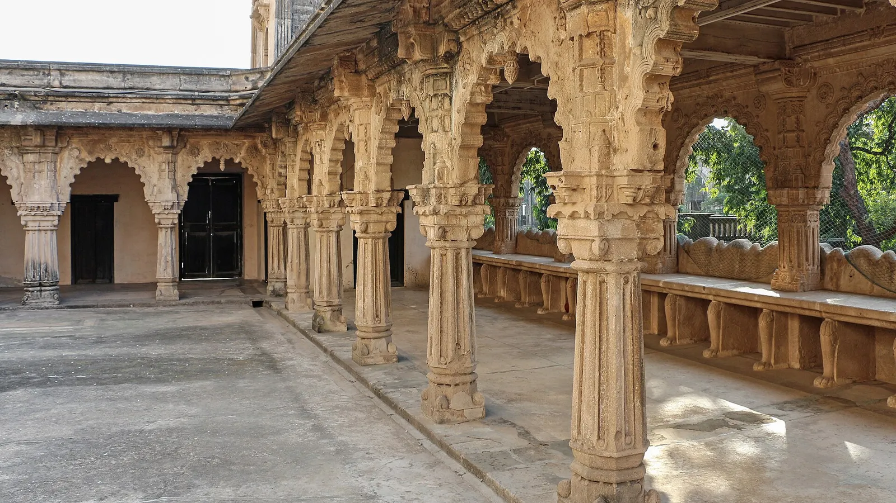
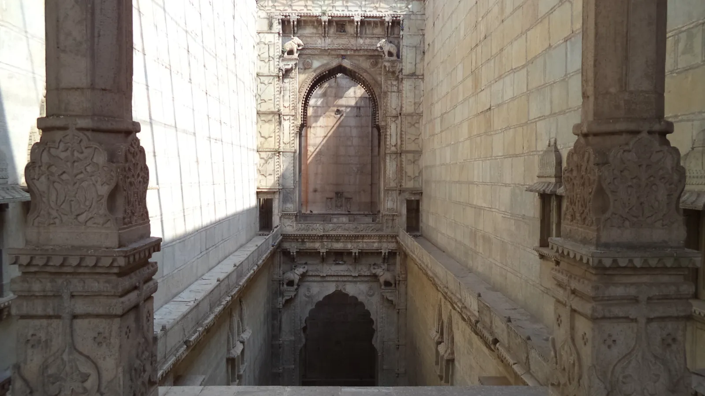
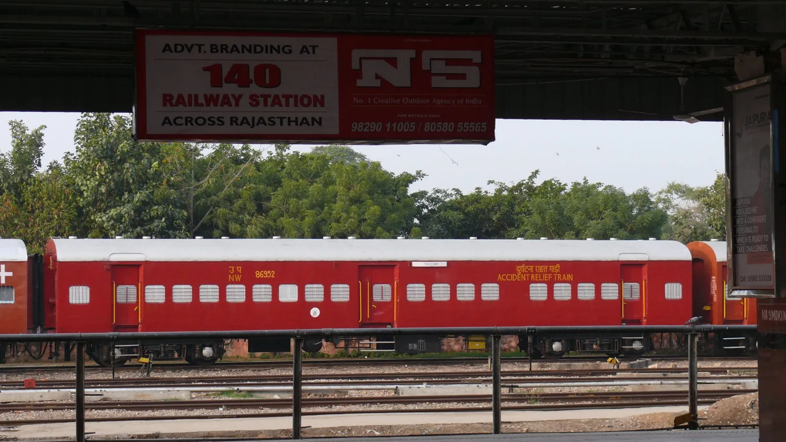
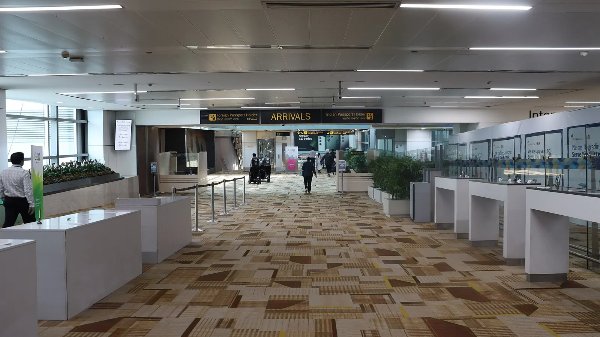
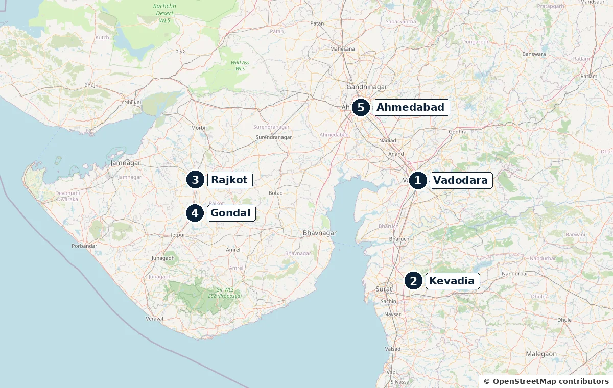

This is our longest western India journey, first planned for an August trip. It runs from Mumbai to the Statue of Unity, a night in a fort-palace hotel outside Rajkot, the lions of Gir and Somnath, Gondal's palaces, Ahmedabad, then Rajasthan: Udaipur, a leopard day at Jawai, two slow days in Bundi, a tiger safari in Ranthambore and Amer Fort. We recommend it for October to March. In August Gir and Ranthambore's core zones are closed and the Elephanta ferry can stop. We also added a night in Jaipur, because Ranthambore to Jaipur to Amer to Delhi in one day is about 10 hours.
See it for yourself
Photos from the journey










Where you go
The journey on one map

MumbaiElephanta CavesVadodaraKevadiaRajkotJunagadhSasan GirSomnathGondalAhmedabadUdaipurJawaiBundiRanthamboreJaipurDelhi
Day by day, in short
Daily travel brief
Distances are by road for the whole day. The full plan with timings comes with your detailed itinerary.
-
1
Land in Mumbai and a night walk on Marine Drive
- Marine Drive and Chowpatty: carry your own water bottle; choose busy stalls.
- Rest as much as you can today.
-
2
Elephanta Caves by ferry, then Juhu
- Ferry to Elephanta: the caves are closed on Mondays.
- Elephanta Caves with a guide: monkeys snatch food and bags on the steps.
-
3
Train to Vadodara and on to Kevadia
- The original plan used Gandhinagar, which is about 4 hours from Kevadia.
-
4
The Statue of Unity, the dam and the Ayurveda garden
- Statue of Unity viewing gallery: closed on Mondays.
- Kevadia has cycles and e-rickshaws to move between the parks.
-
5
Kevadia to a fort-palace outside Rajkot
- Rajkot is our home town.
-
6
Kathiyawadi breakfast, Girnar and the road to Gir
- Girnar ropeway: stops in high wind.
- Gir's core park is closed from 16 June to 15 October; in that season only the Devalia safari park is open.
-
7
Lion safari, Somnath and the evening show
- Gir lion safari: permits booked online in advance in your passport or ID name.
- Somnath temple: phones and bags must be left in lockers.
-
8
Gondal's palaces and Ahmedabad's Manek Chowk
- A long road day, broken at Gondal.
-
9
Ahmedabad to Udaipur and the City Palace
- City Palace with a guide: last entry about 17:00.
- Dinner is on your own tonight: we will send suggestions.
-
10
Jawai's leopards and a boat on Lake Pichola
- Leopard safari and Rabari villages: book only with licensed camps.
- This is a long day.
-
11
Udaipur to Bundi and Taragarh Fort
- Bundi sits next to the new Ramgarh Vishdhari tiger reserve.
-
12
A slow day in Bundi
- Take a torch for the walk down.
-
13
Into Ranthambore for an evening safari
- Tiger safari: core zones close from 1 July to 30 September.
- Book safaris online as soon as your dates are firm.
-
14
Ranthambore to Jaipur and Amer Fort
- We added this night in Jaipur to avoid a 10-hour day.
-
15
-
16
Fly home from Delhi
- Transfer to the airport: leave 4 hours before an international flight.
- Safe travels.
Local know-how
Travel hacks from our desk
UPI, cards and cash
UPI works almost everywhere, even at small stalls. Keep some cash in INR 100 and 200 notes for temples, parking, tips and places where the network is weak.
Temple and shrine etiquette
Cover shoulders and knees. Remove shoes where asked, and carry socks for hot stone floors. Leather belts and bags are not allowed inside some Jain and Hindu temples. Ask before photographing people and inside shrines.
Water and street food
Drink sealed bottled or filtered water only. Choose busy stalls where food is cooked in front of you, and skip cut fruit and ice from roadside stalls.
Driving times
Indian roads are slower than the kilometres suggest: plan on 40 to 50 km an hour on highways and much less in hills and towns. Your driver's breaks and meal stops are built into the timings.
Plugs and tipping
Plugs are Indian three-pin and two-pin, 230 volts. Tipping drivers and guides about INR 300 to 500 a day is appreciated.
When to go
Best time to visit for this journey
November or February: parks open, pleasant weather and few crowds.
October to March. The original plan was for August: in the monsoon Gir and Ranthambore's core zones are closed, the Elephanta ferry may stop and some roads flood, so we recommend the cooler, dry months.
The package
What's included
Included
- 15 nights with breakfast
- Private car with driver throughout
- Mumbai to Vadodara and Jaipur to Delhi trains
- Guided tours of Elephanta, Kevadia, Udaipur, Bundi and Amer
- One Gir, one Jawai and one Ranthambore safari
- 24/7 support from Blue Diamond Voyage
Not included
- International flights and visas
- Entry fees, ropeway, boats and extra safaris
- Meals not marked included
- Wellness treatments
- Travel insurance
The detailed itinerary
Some journeys are planned. Ours are crafted.
The full 16-day plan is ready: hour-by-hour timings, drive times, temple dress codes, food for your diet and a route map for every day. Tell us your dates and your city, and we'll send it to you on WhatsApp, shaped around you.
- Hour-by-hour timings
- A route map for every day
- Hotel and room details
- Visa and entry steps
- Vegetarian and Jain dining
24/7 travel desk+91 97148 59797+91 98242 21400
Photo and map credits
- Marine Drive: Ganesh Mohan T, CC BY-SA 4.0, via Wikimedia Commons
- Gateway of India: iMahesh, CC BY-SA 4.0, via Wikimedia Commons
- Mumbai Central: தகவலுழவன், CC BY-SA 3.0, via Wikimedia Commons
- Girnar Ropeway: Piyush Jnd, CC BY-SA 4.0, via Wikimedia Commons
- Naulakha Palace Gondal: Bernard Gagnon, CC BY-SA 3.0, via Wikimedia Commons
- City Palace Udaipur: Hirumon, CC BY 3.0, via Wikimedia Commons
- Jawai Bandh: Tisha Mukherjee, CC BY-SA 4.0, via Wikimedia Commons
- Taragarh Fort Bundi: Justin Morgan from Richmond, Virginia, USA, CC BY-SA 2.0, via Wikimedia Commons
- Raniji ki Baori: Rajatsh5, CC BY-SA 4.0, via Wikimedia Commons
- Ranthambore National Park: Giles Laurent, CC BY-SA 4.0, via Wikimedia Commons
- Amer Fort: S Sundararajan, CC BY-SA 3.0, via Wikimedia Commons
- Jaipur Junction: This illustration was made by Peter Potrowl. Please credit this with : © Peter P, CC BY-SA 4.0, via Wikimedia Commons
- Indira Gandhi International Airport: Wasiul Bahar, CC BY-SA 4.0, via Wikimedia Commons
- Maps: © OpenStreetMap contributors; road routes by OSRM.